지식 베이스의 「한빛오피스 견적 승인 규정」을 골라 딥 에이전트에게 그 규정대로 프로세스를 만들어 달라고 합니다. 초안을 승인하고 재고 확인·견적 산출을 맡을 에이전트 두 명을 고르면 프로세스·에이전트·입력 폼이 한 번에 만들어집니다. 만들어진 흐름을 규정과 대조해 다른 곳을 고쳐 달라고 합니다.
3장과 무엇이 다른가#
3장에서는 단계를 말로 하나하나 설명했습니다. 회사에는 이미 규정·업무 매뉴얼 같은 문서가 있습니다. 문서를 고르고 “이 규정대로”라고 하면, 딥 에이전트가 문서를 읽어 단계·담당·갈림길을 뽑아냅니다.
| 3장 — 말로 설명 | 이 장 — 문서로 | |
|---|---|---|
| 에이전트 | 기본 에이전트 | 딥 에이전트 |
| 근거 | 내가 적은 문장 | 지식 베이스의 규정 문서 |
| 만들어지는 것 | 프로세스와 폼 | 프로세스, 폼, 단계를 맡을 에이전트 |
규정(한빛오피스-견적승인규정.pdf, 8장에서 올림)의 요점은 이렇습니다.
| 조항 | 내용 |
|---|---|
| 제2조 접수 | 영업 담당자가 견적 요청(회사명, 담당자, 제품과 수량, 설치 지역, 희망 납기)을 받아 적는다 |
| 제3조 재고 확인 | 재고와 입고 예정일을 확인한다. 에이전트가 맡을 수 있다 |
| 제4조 견적 산출 | 가격표로 금액·할인·설치비·총액을 계산한다. 에이전트가 맡을 수 있다 |
| 제5조 승인 | 3,000만 원 미만은 영업팀장, 이상은 영업팀장 승인 뒤 재무 담당 승인. 반려하면 견적 산출로 되돌린다 |
| 제6조 고객 회신 | 견적서를 보내고 보낸 날짜와 제안 유효기간(30일)을 적는다 |
따라 하기 1 — 규정을 골라 요청하기#
- 홈(연필 아이콘)의 채팅 상자에서 에이전트가 「딥 에이전트」인지 확인합니다.
- ＋ › 「지식 베이스」 › 「모두 펼치기」 ›
한빛오피스-견적승인규정.pdf에 체크 › 「파일 1 사용」. - 아래 문장을 보냅니다.
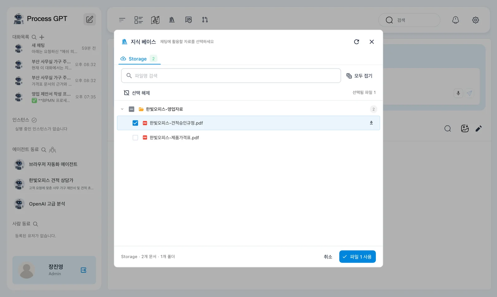
선택한 지식 베이스의 「한빛오피스 견적 승인 규정」 문서를 찾아보고, 그 규정대로 대량 주문 견적 프로세스를 만들어 줘. 규정의 단계와 담당, 금액에 따른 승인, 반려하면 견적 산출로 되돌아가는 것까지 그대로 넣고, 재고 확인과 견적 산출 단계는 에이전트가 맡게 해 줘. 단계마다 입력 폼도 만들어 줘.
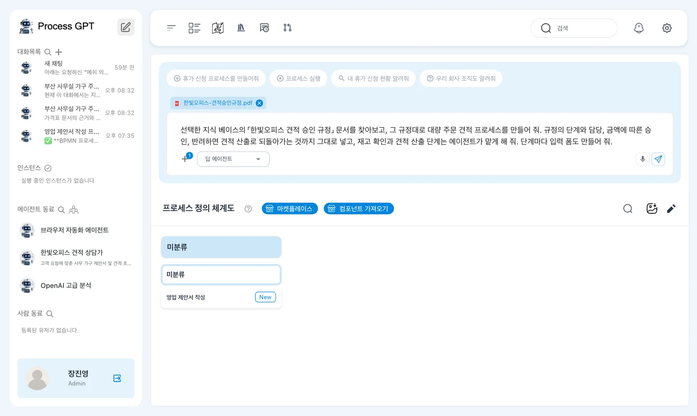
따라 하기 2 — 초안 승인하기#
실습에서는 15초 뒤 「이대로 진행할까요? 추가하거나 바꿀 단계가 있으면 알려주세요.」 창이 떴습니다. 규정의 다섯 조항이 그대로 단계가 되어 있습니다 — 견적 요청 접수, 재고 확인(에이전트), 견적 산출(에이전트), 견적 승인(3,000만 원 미만 영업팀장 / 이상 영업팀장 뒤 재무 담당, 반려하면 견적 산출로), 고객 회신.
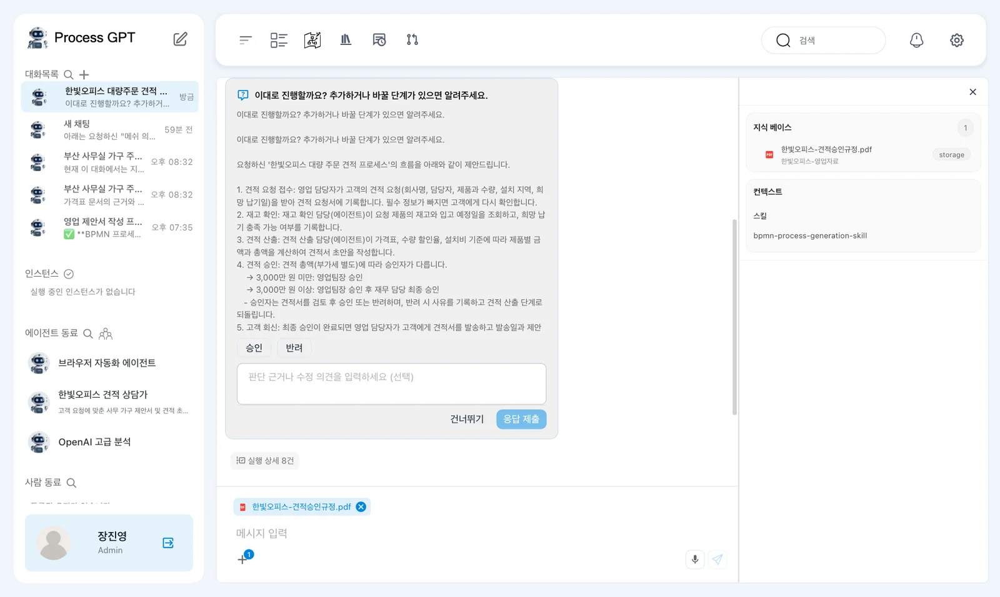
내용이 규정과 맞으면 「승인」을 누르고 「응답 제출」을 누릅니다. 바꿀 것이 있으면 「반려」와 함께 아래 칸에 고칠 점을 적습니다.
초안을 글로 물을 때
딥 에이전트가 창 대신 채팅 글로 초안을 보여 주고 “이 흐름으로 생성해도 괜찮을까요?”라고 묻기도 합니다. 그때는 “네, 이 흐름대로 프로세스를 만들어 주세요.”라고 답합니다.
따라 하기 3 — 단계를 맡을 에이전트 고르기#
이어서 「이 프로세스에 추가할 항목을 골라주세요 (안 고르면 건너뜁니다)」 창이 뜹니다. 규정을 읽고 만들면 좋을 것을 딥 에이전트가 후보로 내놓은 것입니다.
| 후보 | 뜻 |
|---|---|
| [스킬] 견적 금액 자동 산출 · 재고 현황 자동 확인 | 일하는 방법을 적은 문서(11장, 준비 중) |
| [에이전트] 재고 확인 에이전트 · 견적 산출 에이전트 | 그 단계를 맡을 AI 동료 |
| [DMN] 승인 한도 판단 | 3,000만 원 기준 승인 분기를 결정표로(15장) |
[에이전트] 재고 확인 에이전트와 [에이전트] 견적 산출 에이전트 두 개에 체크하고(「2개 선택됨」) 「응답 제출」을 누릅니다.
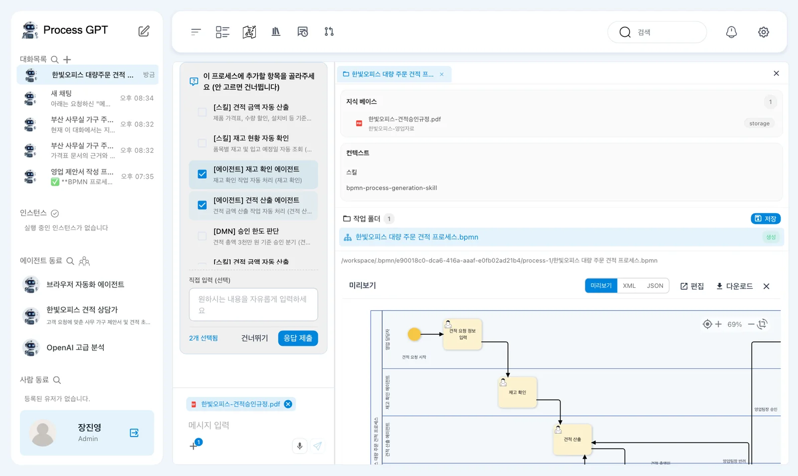
따라 하기 4 — 확인하고 저장하기#
실습에서는 요청부터 약 67초 만에 「프로세스를 생성했어요. 확인 후 저장 버튼을 눌러주세요.」가 왔습니다. 오른쪽 진행 상황의 다섯 칸(초안 설계, 스킬·에이전트·DMN 선택, 입력 폼, 검증·자동 보정, 결과 통합)이 모두 completed이고, 작업 폴더에 9개가 있습니다.
| 작업 폴더 | 내용 |
|---|---|
| 한빛오피스 대량 주문 견적 프로세스.bpmn | 흐름도. 누르면 아래에 미리보기 |
| agent/재고 확인 에이전트 · agent/견적 산출 에이전트 | 새 에이전트 두 명 |
| form/request_estimate.form · stock_check · estimate_calc · finance_approve … | 단계마다 입력 폼 |
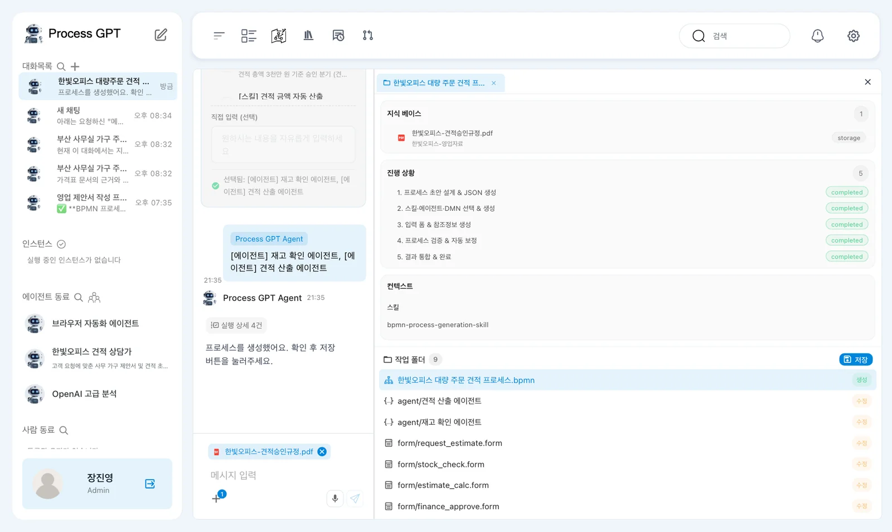
작업 폴더 오른쪽 위 「저장」을 누릅니다. “저장이 완료되었습니다. 생성된 프로세스·스킬·에이전트를 확인하세요.”와 함께 저장된 BPMN 프로세스 1개, 에이전트 2개가 카드로 나옵니다. 다른 화면으로 가거나 새로고침하면 사이드바 「에이전트 동료」에 「견적 산출 에이전트」와 「재고 확인 에이전트」가 들어옵니다.
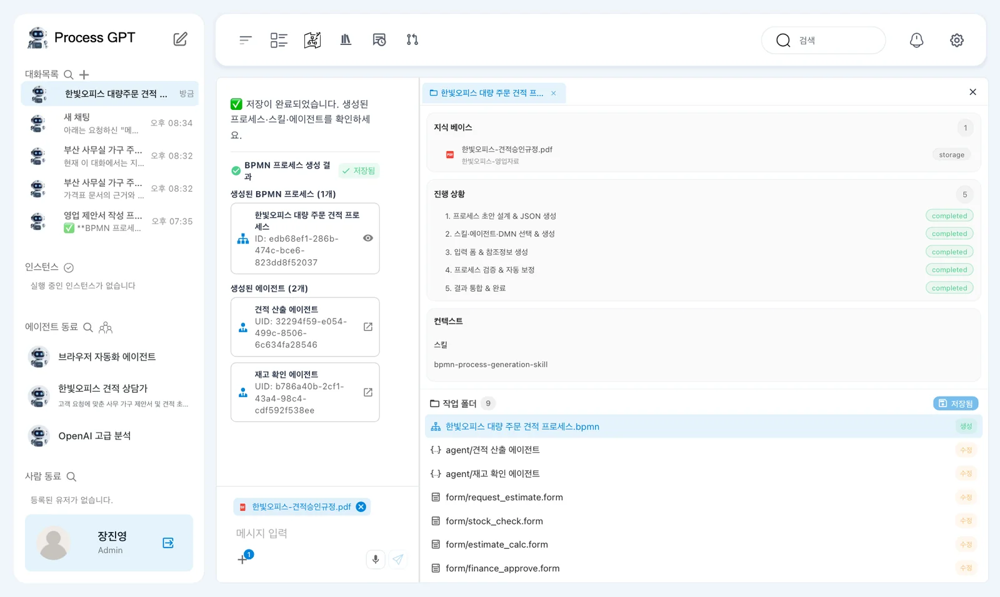
저장을 눌러야 남습니다
「프로세스를 생성했어요」까지는 작업 폴더에만 있습니다. 「저장」을 누르지 않고 나가면 프로세스 정의 체계도에 들어가지 않습니다.
따라 하기 5 — 흐름도를 규정과 대조하기#
홈 아래 프로세스 정의 체계도의 「미분류」에 「한빛오피스 대량 주문 견적 프로세스」가 생겼습니다. 눌러서 엽니다.
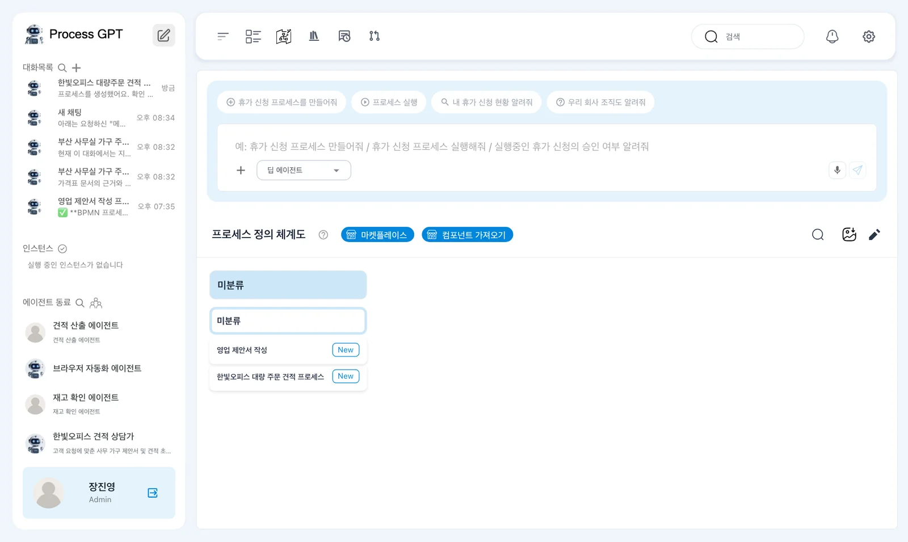
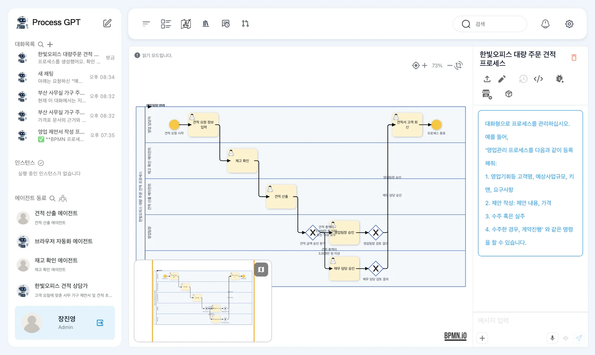
| 확인할 것 | 규정 | 처음 만들어진 흐름도 |
|---|---|---|
| 레인 | 영업 담당자, 재고 확인, 견적 산출, 영업팀장, 재무 담당 | 같음 |
| 재고 확인·견적 산출 | 에이전트가 맡을 수 있음 | 「재고 확인 에이전트」·「견적 산출 에이전트」 레인 |
| 반려 | 견적 산출로 되돌림 | 같음(「영업팀장 반려」·「재무 담당 반려」 → 견적 산출) |
| 3,000만 원 이상 | 영업팀장 승인 뒤에 재무 담당 승인 | 갈림길에서 영업팀장 길과 재무 담당 길로 따로 나뉘고, 영업팀장이 승인하면 금액과 관계없이 바로 고객 회신 |
마지막 줄이 다릅니다. 이대로면 4,000만 원 견적도 영업팀장 승인만으로 고객에게 나갈 수 있습니다. 10장에서 견적 초안을 가격표와 대조했듯, AI가 만든 흐름도 원문과 대조합니다.
왼쪽 위로 꺾인 화살표
현재 버전에서는 반려되어 견적 산출로 되돌아가는 화살표(「영업팀장 반려」·「재무 담당 반려」)가 흐름도 왼쪽 위 구석으로 꺾여 겹쳐 그려집니다. 연결은 맞게 되어 있고 그림만 어긋난 것입니다.
따라 하기 6 — 고쳐 달라고 하기#
- 사이드바 대화목록에서 이 장의 대화방(「한빛오피스 대량주문 견적 프로세스 설계」)을 다시 엽니다.
- 아래처럼 무엇이 다른지 적어 보냅니다.
규정 제5조와 다른 곳이 있어. 견적 총액이 3,000만 원 미만이면 영업팀장 승인 뒤 바로 고객 회신, 3,000만 원 이상이면 영업팀장 승인 뒤에 재무 담당 승인을 받고 나서 고객 회신으로 가야 해. 이 순서로 흐름을 고쳐 줘.
실습에서는 30초 만에 다시 「프로세스를 생성했어요. 확인 후 저장 버튼을 눌러주세요.」가 왔습니다. 작업 폴더의 「저장」을 누릅니다.
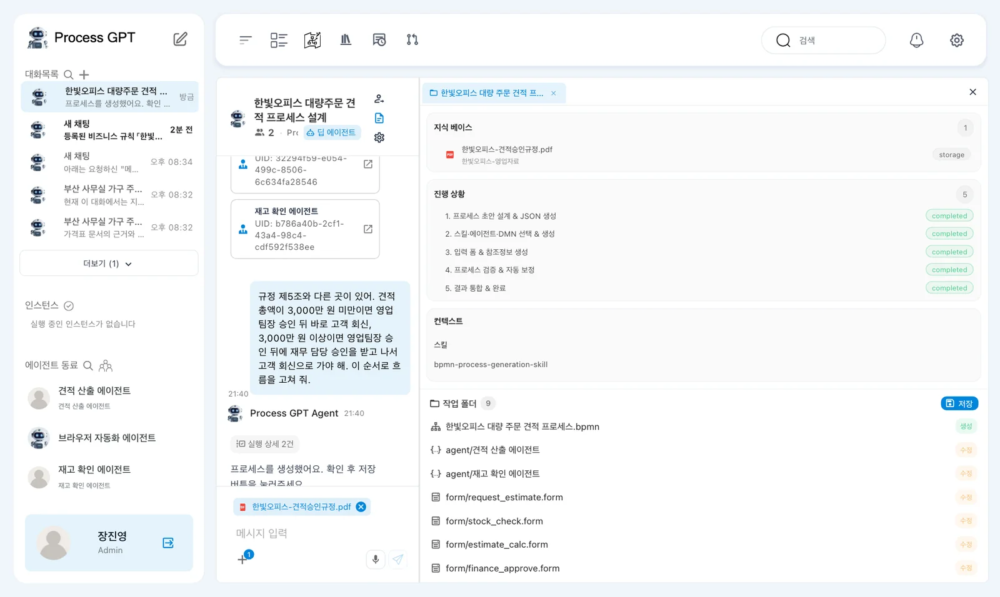
체계도를 다시 보면 같은 이름의 프로세스가 두 개 있습니다. 현재 버전에서는 고친 결과가 처음 것의 새 버전이 아니라 새 프로세스로 저장되기 때문입니다.
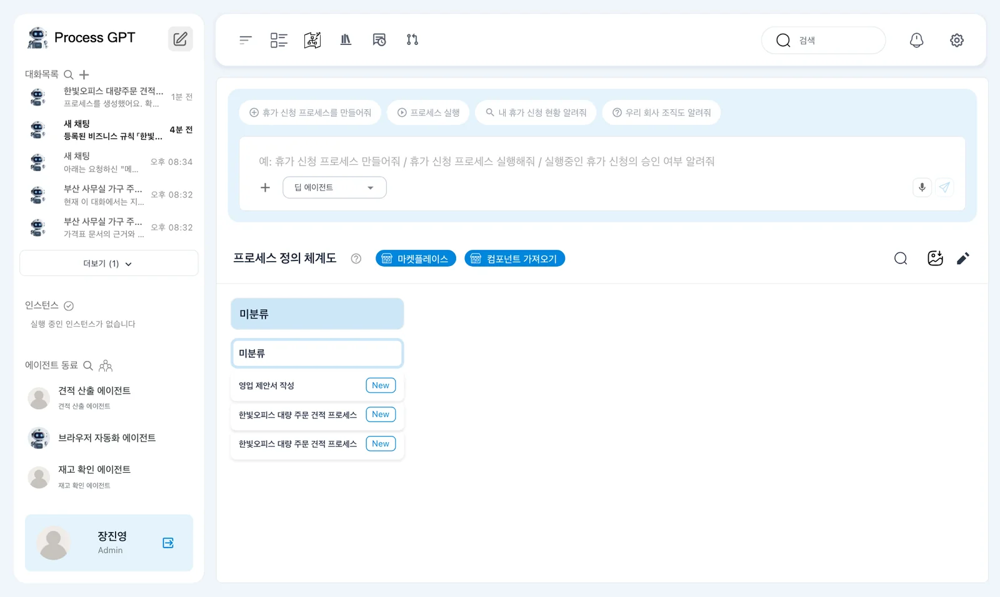
- 두 개를 하나씩 열어 봅니다. 「영업팀장 검토 결과」에서 「재무 담당 승인」으로 가는 화살표가 없는 쪽이 처음 것입니다.
- 처음 것을 연 화면의 오른쪽 위 빨간 휴지통(「프로세스 삭제」)을 누르고, “프로세스를 삭제하시겠습니까?”에서 「삭제」를 누릅니다.
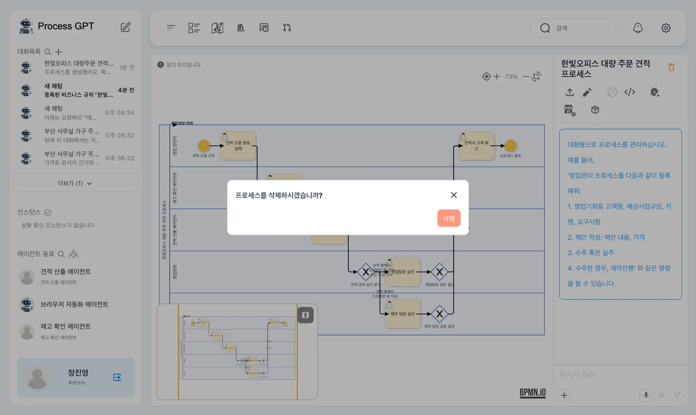
남은 흐름도에서는 「영업팀장 검토 결과」가 세 갈래로 나뉩니다. 앞쪽의 「견적 금액 승인 분기」는 남아 있지만 두 길(미만·이상)이 모두 영업팀장 승인으로 가므로, 실제로 갈리는 곳은 영업팀장 검토 결과입니다.
| 영업팀장 검토 결과 | 다음 |
|---|---|
| 반려 | 견적 산출로 되돌아감 |
| 승인 && 견적 총액이 3,000만 원 미만 | 견적서 고객 회신 |
| 승인 && 견적 총액이 3,000만 원 이상 | 재무 담당 승인 → 승인이면 고객 회신, 반려면 견적 산출 |
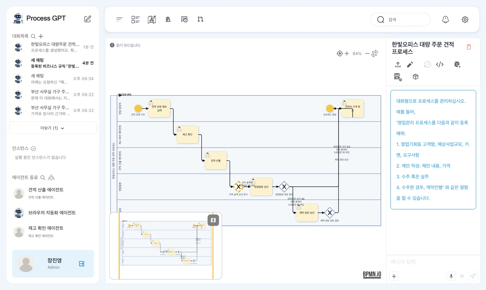
실행은 아직
이 프로세스를 실행해 에이전트가 재고 확인·견적 산출을 맡게 하는 것은 13장(준비 중)에서 다룹니다. 현재 버전에서는 만든 역할과 에이전트가 실행 엔진에 제대로 이어지지 않아, 그 부분이 고쳐진 뒤 공개합니다.
다음 장으로#
규정 문서로 에이전트가 들어간 프로세스를 만들고, 원문과 대조해 고쳤습니다. 규정의 숫자 기준(수량 할인, 승인 한도)은 결정표로 따로 떼어 두면 바꾸기 쉽습니다. 다음은 결정표(DMN)입니다(15장).
확인 문제
- 이 장에서 기본 에이전트가 아니라 딥 에이전트를 쓰는 까닭은 무엇인가요?
- 처음 만들어진 흐름도에서 4,000만 원 견적은 어떤 길로 갈 수 있었나요? 규정과 무엇이 달랐나요?
- 고친 흐름도에서 2,500만 원 견적과 4,000만 원 견적은 각각 누구의 승인을 받고 고객에게 가나요?
답
- 딥 에이전트는 고른 지식 베이스 문서를 찾아 읽고, 그 내용으로 프로세스·폼·에이전트 파일을 만듭니다. 실습에서 기본 에이전트에게 같은 요청을 했더니 문서를 읽지 않고 승인 기준(500만 원, 2,000만 원)을 지어냈습니다.
- 영업팀장 길로 가서 영업팀장이 승인하면 바로 고객 회신으로 갈 수 있었습니다. 규정은 3,000만 원 이상이면 영업팀장 승인 뒤에 재무 담당 승인까지 받아야 합니다.
- 2,500만 원은 영업팀장 승인만, 4,000만 원은 영업팀장 승인 뒤 재무 담당 승인까지 받고 고객 회신으로 갑니다.